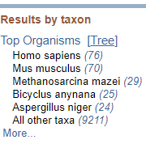
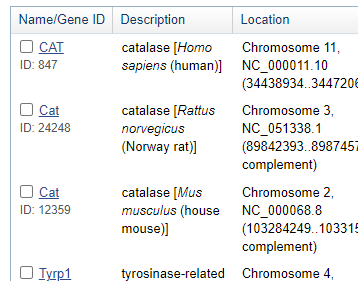
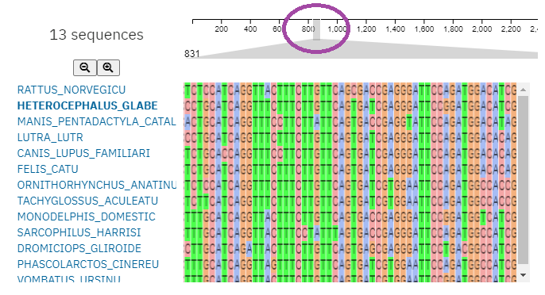
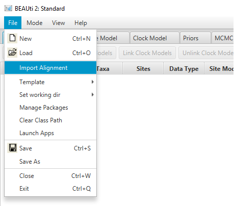
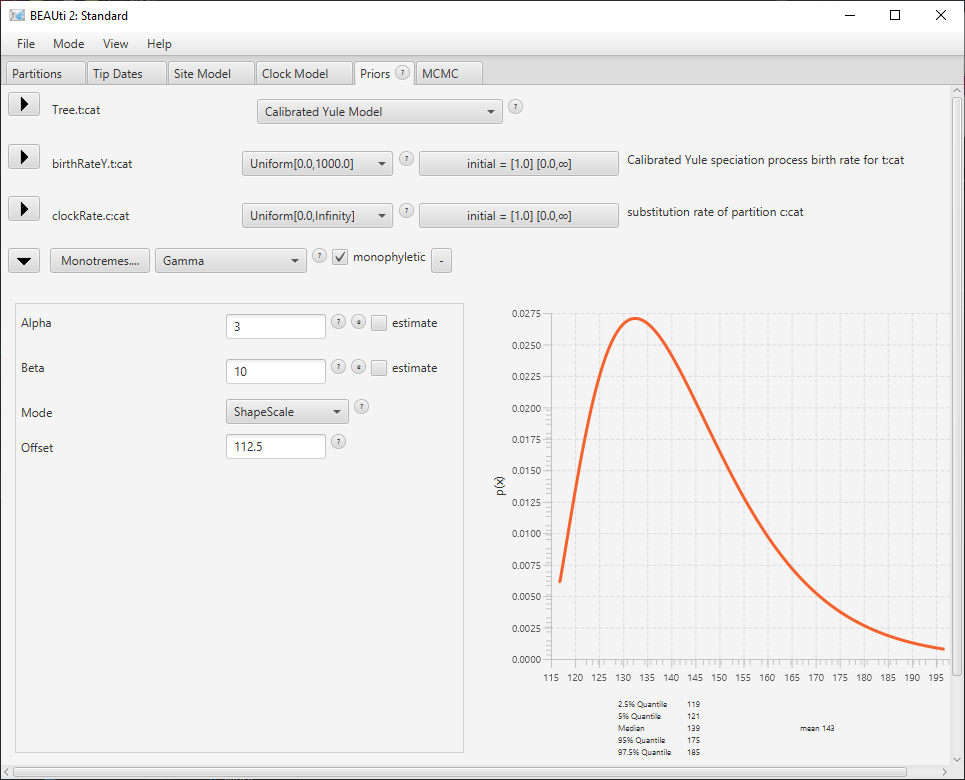

We will download sequences of the catalase gene from the
NCBI,
a database covering the majority of DNA sequences that have been
collected.
-
Head to
https://www.ncbi.nlm.nih.gov/gene.
-
Type
catalase into the search (Gene) box
- Click "Search"

-
Under "Results by Taxon",
“Top Organisms” displays numbers of sequences from specific taxa.
click "Tree" to display taxa grouped phylogenetically.
-
Expand animals → chordates → vertebrates → mammals to view
all available gene sequences. Notice the taxa for which
data is available.

-
Find a taxon of your choice with the gene ID "CAT" and
click the gene ID.
Not all similar DNA sequences are necessarily homologous –
for instance, sometimes a gene is duplicated, and two copies
evolve independently in the same lineage.
As mammals are well understood, we can rely on existing
work to identify sequences of equivalent genes.
-
Scroll down to § "General gene information" and click the link
"Homology → NCBI Orthologs"
[→].
This detailed information is only available for vertebrates.
Now let's choose some taxa to study.
-
Type Marsupials into the "Enter taxonomic name" box and select
Marsupials (Metatheria) from the dropdown to filter results.
-
You should see half a dozen available sequences.
Note the taxa for which data are available (the common name
is given after the binomial epithet), and the length
of the gene sequences (in amino acids, aa);
some genes are different lengths.
-
Select four or five taxa and click “Add to cart”.
Prefer taxa that are included in one of the
"well-corroborated trees" figured by
Asher & Smith (2023) –
it will help to know something about the relationships
between your chosen taxa.
-
Clear the taxonomic name box and repeat for
placentals (Eutheria)
-
Now add both the avaialble species of monotreme to your cart.
The platypus and echidna will together form our outgroup.
-
Open your cart (trolley icon, should read e.g. “12 items”).
-
Select “Protein alignment → one sequence per gene”.
-
Click “Advanced parameters” (under the "Align" button").
- Notice the gap opening penalties.
What do these mean?
Are the default values sensible?
-
Click "Align" to start computing an alignment.
This will take a few seconds as the algorithm tries to find
the best fit match of AA sequences.
-
If the alignment is incorrect,
what will the consequences be for inference?
-
Observe the graphical overview of the alignment.
Note the highly conserved nature of the amino acid sequences.
Scroll down to see the aligned sequences themselves.
-
The monotremes have more amino acids than other mammals.
Were these extra elements present in the common ancestor?
So far we've been aligning the amino acid sequences.
We could work backwards from this alignment to produce a
DNA alignment. But we're instead going to use the mRNA
nucleotide sequences directly.
-
Close the COBALT alignment tool and return to your Cart.
-
Click "Download" → "RefSeq transcripts (FASTA)"
(one sequence per gene). This will download the mRNA
sequences.
-
Open the file in a text editor (I recommend
Notepad++;
Apple users might prefer
Zed)
-
Perform a search & replace to replace spaces (
)
with underscores (_).
-
Optionally, remove other information, to leave only
the species names – this doesn't affect the analysis,
but may make your results easier to read.
-
Be sure to retain the initial “
>”,
such that >NM_001035386.2_Bos_taurus_catalase_(CAT),_mRNA
becomes >Bos_taurus
Align DNA sequences
Now we are ready to align our nucleotide sequences.
-
Open the
MUSCLE web tool
-
Under "Input sequence", select "Choose file" to upload your
edited FASTA file.
-
Under "Parameters", select "Output Format: Pearson/FASTA".
-
Click "Submit" and wait for your results to be ready.
-
Explore your alignment; zoom and drag using the axis.

-
Notice that the MUSCLE algorithm aligns the sequences assuming
a phylogenetic explanation for differences; it thus generates
an unrooted phylogenetic tree as part of
finding the best alignment.
-
How would the tree look different if a root was specified?
-
How do the relationships in your tree compare to those in the
well-corroborated trees?
-
Download the results in FASTA format by heading to "Tool Output→Download".
-
If that doesn't work, try "Result Files→Alignment in FASTA format"
-
If necessary, use my
sample output file.
-
Rename the file so it has a
.fasta extension
(replacing the default .txt).
-
Stuck?
Try asking e.g.
Bard,
ChatGPT
"How do I change a file extension in Windows 10?"
Generative AI often gets to the point faster than top-ranked
search results,
which are often bloated with
SEO
blather.
Design a molecular clock analysis
-
If you haven't already done so,
download BEAST2 and unzip the contents to a folder on your computer.
-
Navigate to this folder and run "BEAUti".
You may need to approve a security prompt.
-
Import your alignment file using "File→Import alignment"
-
If you see "Unsupported alignment",
check that you changed the file extension to
.fasta

- Confirm that the data type is "nucleotide"
-
Open the "Site Model" tab and select a Substitution Model.
The default, JC69, assumes a constant mutation rate between
any of the four nucleotide bases.
The HKY model incorporates the fact that chemically similar
bases are easier to substitute – and tend to encode chemically
similar amino acids, so mutations are less likely to be
deleterious.
The TN93 model fine-tunes this further by adding further
parameters, whereas the fully generalized GTR
(Generalized Time Reversible) model allows a distinct mutation
rate between each different pair of nucleotides (64 in total) –
whilst potentially more accurate, it takes more data to infer
the values of all 64 parameters, making the model succeptible
to overfitting with smaller datasets like ours.
Select the HKY model and set Frequencies: Empirical.
-
Open the "Clock Model" tab. We will use a Strict Clock
for our initial analysis. Leave the Mean clock rate at its
default setting (1).
-
Open the "Priors" tab and update the "Tree.t" prior from
"Yule Model" to "Calibrated Yule Model"
-
Save your progress (File → Save)
-
At the bottom of the "Priors" tab, click "+ Add Prior".
We are going to constrain the age of the common ancestor of a clade.
Our prior allows us to set a probability distribution on the
date of the most recent common ancestor
(MRCA)
of a set of taxa.
-
Select "MRCA Prior".
- Be careful!
Priors cannot be deleted – if you select the wrong one,
you'll have to start again from your last save file (!)
-
Select the taxa in the group you wish to constrain.
We'll start with the monotremes, Ornithorhynchus and
Tachyglossus. Move these taxa to the right-hand
list (by pressing ">>").
-
Enter "Monotremes" as a taxon set label
-
Click "OK".
The prior should now appear on your "Priors" tab.
At the moment it is an "empty" prior and will not affect
the analysis.
-
Tick the "Monophyletic" checkbox. This forces these taxa
to form a clade – and allows us to constrain the date of
the clade's MRCA.
-
Choose a prior from the the "[none]" drop-down box.
A "Gamma" prior is probably appropriate here.
-
Select the ▶ button to expand the prior.
Specify appropriate values for the "Alpha", "Beta" and
"Offset" parameters.

Specifying a prior
This is a good point to ask what an appropriate prior
distribution might look like.
Bayesian priors attempt to encapuslate our prior beliefs,
i.e. what we think we know before we run the analysis.
At this point you probably don't have much prior
knowledge about monotreme origination. But such information
is seldom far away; a Google Scholar search for
“
Oldest monotreme” throws up a 2008 PNAS article
(fourth result for me)
“
The oldest platypus and its bearing on divergence timing
of the platypus and echidna clades”.
This study is perfect for our needs:
it reports a total-group platypus, which is by definition a
crown-group member of the clade we have constrained
(strictly, Platypus + Echidna – there may be other crown-group
monotremes not included in our analysis).
This fossil is dated to 121–112.5 Ma, so the MRCA of
platypus and echidna must be older than 112.5 Ma;
this gives us a value for our "Offset" parameter.
The other parameters are more subjective.
This this is a rather derived fossil and
(based on the PNAS abstract and the snippets in the other Google Scholar results)
the fossil record of monotremes seems to be quite sparse,
so I think it’s quite likely that there are older fossils
remaining to be discovered – it would be surprising if the
only relevant fossil we'd found was so close in time to the MRCA.
The Beta parameter allows us to scale ("stretch") the distribution.
The default value of 2 seems too small for me;
our default priors assign a 95% probability to the MRCA
being younger than 122 Ma (see the Quantile report under
the curve visualization), but our dating uncertainty on the
fossil itself spreads back to 121 Ma.
Let's try a larger value: perhaps 200?
Does this prior look reasonable? Check the shape of the
curve and its summary statistics.
The very earliest stem-group mammal fossils are ~320 Ma,
so it's highly unlikely that the
platupus-echidna MRCA dates back that far –
The mammal crown group is probably not older than
Morganucodonts, late Triassic (205 Ma) upper-stem Mammals,
so we probably don’t want a prior that assigns much probability
to ages older than 205 Ma for our monotreme divergence node.
Perhaps a Beta value of 20 looks more reasonable?
We should also consider that the fossil is quite derived,
and that the ~30 Ma gap to the second-oldest platypus
fossil suggests that the monotreme fossil record is rather
incomplete.
These considerations can be reflected in our Alpha parameter.
Compare values of 1 and 10 to get a feeling for how
this parameter changes the shape of the probability
distribution.
If we felt it was likely that our constraining fossil was
very close to the date of the MRCA, we might pick a small
value of alpha; in this case, I am inclined to opt for a
larger value of Alpha, which increases the mean of the
distribution – simply put, it moves the "hump" of the
distribution further back in time.
Increasing Alpha also extends the tail of the distribution,
so Beta will need adjusting accordingly: I'm happy with values
of Alpha = 3; Beta = 10; Offset = 112.5.
A vertebrate palaeontologist with a better understanding
of platypus morphology and mammal taphonomy would no doubt
come up with a different set of values.
If we have lots of informative data, we hope that the signal
will outweigh the prior: we update our beliefs in light
of new evidence.
But if our data are not particularly informative, we might
find that our results simply echo our priors back to us:
in which case, justifying the precise shape of our prior
distribution becomes even more important.
-
Select at least one, ideally two or three, further clades to
constrain. Search the literature to justify your design
of priors.
-
To root the tree, add an MRCA prior including everything that's
not a monotreme. Label it appropriately
("Theria", or simply "ingroup").
Leave the prior type to "[none]" and select "monophyletic".
This will force the tree to be rooted on monotremes,
and produce a summary for the posterior estimate of the
date of the MRCA of placentals and marsupuals (the therians).
-
Finally, configure the
MCMC
analysis. Set the Chain Length to 100 000.
Simply put, this will try 100k different parameter variations
(e.g. mutation rate, tree topology, branch lengths),
sampling more plausible values of the parameters with higher
frequencies.
-
Safe your settings (File→Save).
Conduct the analysis
- Return to your BEAST folder and run BEAST
-
Select the "Input file" you just created in BEAUti.
- Notice the box reading "default: only write new log files".
-
Log files will be named based on the input file;
if you wish to overwrite or add to a previous run, select
the relevant option, otherwise the presence of previous log
files will cause the run to abort with an error.
- Press "Run" to begin the analysis.
-
Open Tracer
-
Under "Trace Files:", press "+" to load your BEAST log.
-
If the run's not finished,
Tracer will display the current results; press the "Reload"
button to update.
-
Use a template file
if needed.
-
Note the Estimated Sample Size for each parameter.
This is an indication of how well the range of possible values
has been explored; values < 200 are not likely to be
statistically robust estimates.
The rest of this content is on its way.